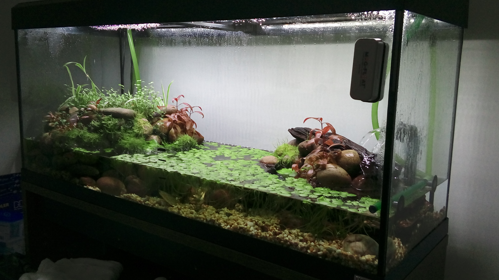
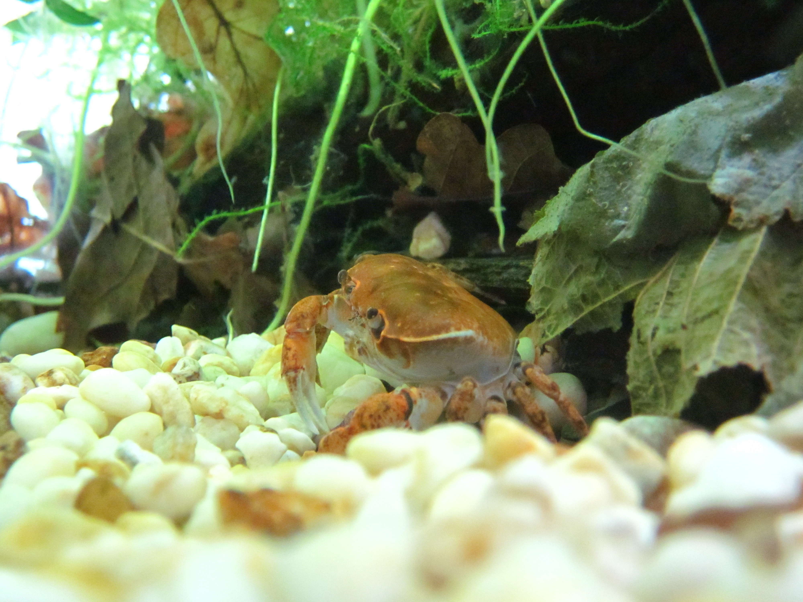

Crabs!
This is my aquarium that I have built up over the past five years. The only residents are Japanese river crabs that I brought with me to the UK from Tokyo.
The main tank is 240L and 120 cm long and I have setup a 120L sump underneath for extra filtration. The main tank is also connected to a Fluval 306 canister filter, but I like the sump because it hides a lot of equipment and provides extra volume for the crabs. The crabs' natural habitat are freshwater streams in the mountains of Japan, so they require perfect water conditions.
